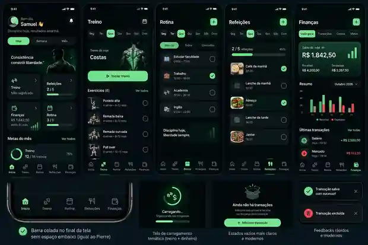
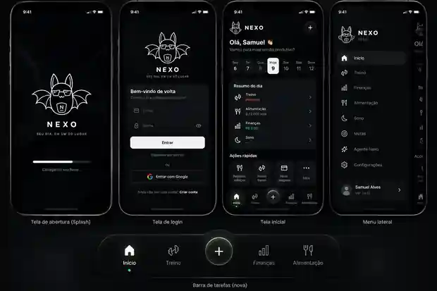

01 / Produto pessoal
NEXO
Um hub pessoal mobile-first para integrar treino, rotina, refeições, finanças, investimentos e inteligência contextual.
Abrir aplicação ↗Código privado

Problema
Informações pessoais importantes ficam espalhadas entre apps, planilhas, notas e lembretes.
Solução
Uma experiência única com autenticação, planos configuráveis, histórico, notificações, finanças e Agent híbrido.
Arquitetura
Expo Router + React Native Web, Supabase Auth/PostgreSQL/RLS, Edge Functions, TanStack Query e Zustand.
Qualidade
TypeScript strict, testes, lint, build web, fila offline, retry inteligente e cuidado com PWA/mobile.
